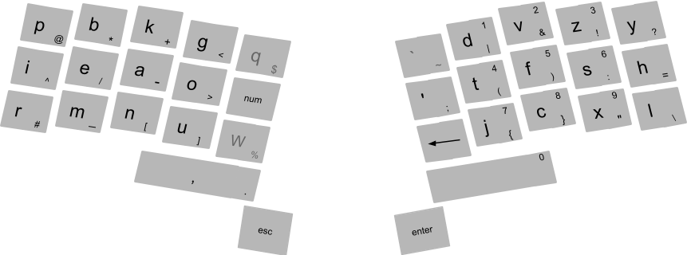

Comshell
1, Comshell
command based user interface
command based user interfaces (using keyboard, voice, gesture) are
faster, more convenient and more powerful;
than pointer based user interfaces (using mouse, touch, pen)
with simple uniform GUI, there is no need for a pointer based user interface;
touch interfaces can still be useful in simple limited applications
also for some special artistic applications, pen input remains the only choice;
touch interface may seem very convenient at first sight,
especially if accompanied with the power of gestures;
but the problem is the form-factor:
since interaction at a distance is not possible, one must always carry the whole system;
detection of voice commands is a relatively simple process (compared to general speech recognition),
because we only need to match against a relatively small set of commands;
a headset with near range microphone can be used, to exclude far away sound sources;
also it is better to put battery and transmitter of the headset in a separate unit,
that can be put in the pocket;
this makes the headset lighter and safer;
for those who neither can use all their fingers, nor can talk,
gesture based (2d) input can be implemented;

, two commas -> ;
, ";" followed by comma -> .
, comma followed by "-" -> '
, ";" followed by "-" -> "
, comma followed by "(" -> [
, ";" followed by "(" -> {
, comma followed by "c" followed by space -> : (followed by space)
, comma followed by "psi" followed by comma -> ψ
, "a" then two "-" -> A
, "abc-" then space -> ABC
Kinesis Advantage 2 keyboard
Comshell
Comshell is a unified computing environment, utilizing command based user interface;
projects are directories inside "~/projects/";
list of all projects will appear in a floating layer, at the center of screen;
list of all files in the project will be displayed in a tree-view at the left;
we can have views of different locations in a project (even of the same file) in separate tabs;
text files will be opened in a text editor;
directories containing a file named ".gallery" will be opened in a view showing thumbnails;
files and directories with names starting with a dot, will be hidden;
".cache" directory inside a project is for files we don't want to share or backup;
non-local projects, web pages, PDF documents, etc,
accessed from links inside the main project, will be opened in a floating layer;
web pages:
, move caret between visual objects (ignoring structural objects);
, or use hinting for text input and other widgets, text and other elements like images and videos;
projects in external disks (inside a root directory named "projects"),
can be accessed from a floating list view;
at the bottom, there is a status-bar showing messages at the left, and system status at the right;
system status: network, CPU and RAM usage, year-month-day weekday AM/PM hour:minute
modal key-bindings;
modes (like normal mode and insert mode) must be visually distinctive;
press "escape" to go back to normal mode;
in normal mode we can:
, move the cursor to the next or previous character or word;
, move the cursor to the next or previous lines or table cells;
, move the cursor to the next or previous paragraph;
, start and end selection, then copy or cut;
, paste
, undo, redo
, find
, enter insert mode;
double space: creating tables
auto-completion is done (after typing "space") only where there must be a predefined name;
list of available names will be displayed in a list at the right;
2, computers
asynchronous digital circuits
in conventional digital circuits when the inputs change,
the outputs can have temporary invalid values, until they stabilize to the valid values;
but for the circuit to do its job,
gates with memory (registers) must operate only when the inputs have correct values;
one solution is to synchronize registers with a global clock signal;
the period of clock signal is made long enough for the circuit to become stable;
disadvantages of synchronous circuits:
, we have to split long operations into several smaller ones,
which can be performed in successive clock cycles (a technique known as pipelining);
otherwise the circuit would be slow and inefficient;
, distributing a high-fan-out, timing-sensitive clock signal can be complicated;
, electromagnetic interference at the clock frequency and its harmonics;
, widely distributed clock signal takes a lot of power,
and must run whether the circuit is receiving inputs or not;
although "clock gating" can help to reduce some of the problems of synchronous circuits,
i think the real solution is to use asynchronous circuits;
the only sane kind of asynchronous circuit which i could imagine is this:
, next to any data wire there is a control wire which determines if the data is valid or not;
, when a register wants to change its outputs, it first invalidates them,
for a duration equal to the delay of one gate;
, any gate receiving an invalid input, invalidates its outputs;
, this way all data which is going to change in the future, is first invalidated;
, registers operate only when all inputs are valid;
computers
cpu, memory, peripherals,
this seems to be the only practical architecture for the hardware of computers;
cpu runs a sequence of simple computations, called instruction codes, one by one;
compilers are special programs that generate instruction codes,
from a program written in a structured and human readable language;
there is always possibility of backdoors for closed source CPU,
especially if the boot firmware is also closed source;
recently introduction of "secure execution environment" makes this situation even worse;
it's a closed source, full-blown, always-running mini operating system,
with full access to the whole system (including memory and network);
furthermore they have made it practically impossible for users to disable it;
this mess of a design cries out for hidden and quite sophisticated backdoors;
on X86 architecture we can have open source boot-loader, and GPU drivers,
using Intel with Coreboot+Grub2 for example;
though there sill will be closed source parts (Intel FSP);
but there is no easy way to get rid of Intel ME (or AMD PSP);
though there are some hacks for disabling (but not completely remove) Intel ME:
ARM architecture is closed source too, but we can have open source GPU driver (Qualcomm/Adreno),
and Coreboot+Grub2 bootloader;
ARM TrustZone can host an open source operating system too, apparently;
open source CPU:
, RISC-V: no adequate hardware available yet;
, PowerPc: no adequate hardware available yet;
, MIPS: bad old design (relative to other alternatives, not X86),
no suitable hardware available yet;
programs usually do not run directly on computer hardware;
instead they run on a more sophisticated software machine (a virtual machine) called the kernel;
in theory we can live without a kernel (an idea sometimes called a library operating system);
but in that case, we have to rewrite all the required libraries, on bare metal;
anyway, having an operating system, makes developing and testing new programs much easier;
Linux is a highly developed, constantly evolving, open-source kernel;
in Linux (and other Unix based operating systems) most things appear in the file system;
i think the reason is to make it possible to do lots of things using shell scripts,
instead of a proper programming language;
while i can understand the convenience it provides, i don't think it's good design;
3, Arch Linux
using Arch Linux we can easily setup and maintain a Linux system;
the following shows how to setup a basic graphical environment,
with Atom editor and Chromium browser, which you can toggle in between with "alt-tab";
also there is a terminal which you can show with "alt-`" and hide with "alt-tab";
in addition, we can write scripts, to open various graphical applications,
each in its own workspace ("alt-space" brings you back to the workspace with Atom editor);
boot Arch Linux live environment;
to ensure the system clock is accurate:
; timedatectl set-ntp true
if you need to connect to a WIFI network:
; iwctl
device list
station <device> get-networks
station <device> connect <SSID>
list available block devices using "lsblk", then on the intended block device,
create the needed partitions, then format and mount them:
; printf "label: gpt\n,260MiB,U,*\n;" | sfdisk /dev/<device>
; mkfs.fat -F32 /dev/<partition1>; mkfs.btrfs /dev/<partition2>
; mount /dev/<partition2> /mnt
; mkdir -p /mnt/boot/efi
; mount /dev/<partition1> /mnt/boot/efi
; mkdir /mnt/etc
; genfstab -U /mnt >> /mnt/etc/fstab
; pacstrap /mnt base
; arch-chroot /mnt
; export url=https://raw.githubusercontent.com/damoonsaghian/Comshell/master/etc/
; curl --proto '=https' -sSf -o #1 "$url"{arch-install.sh,sway-config}
study the downloaded files, and then:
; sh arch-install.sh
; exit; reboot
the above script sets the "user1" for automatic login;
but to protect the computer from physical attacks, you have to disable automatic login,
and lock the session when you leave the computer;
in addition you have to:
, somehow prevent tampering with hardware;
, disable boot from USB (and other external ports);
, protect boot firmware by a password;
these can make physical attacks more difficult, but not impossible;
keep in mind that physical access to a computer is root access, given enough time and resources;
after booting into the installed Arch Linux, you will see a blank screen;
press "Alt+`" to open a terminal window;
to connect to a WIFI network:
; nmcli dev wifi
; nmcli --ask dev wifi con <ssid>
to disconnect from a WIFI network:
; nmcli con down id <ssid>
to disable WIFI:
; nmcli radio wifi off
; mkdir -p ~/.config/gtk-3.0
; cp etc/gtk.css ~/.config/gtk-3.0/
; printf '[Settings]\ngtk-theme-name = Materia-light-compact\ngtk-font-name = Sans' >
~/.config/gtk-3.0/settings.ini
; gsettings set org.gnome.desktop.interface gtk-theme Materia-light-compact
; gsettings set org.gnome.desktop.interface font-name Sans
; sudo pacman -S waybar otf-font-awesome xorg-server-xwayland atom chromium aria2 moc mpv
; mkdir ~/.config/waybar
; cp etc/waybar-config ~/.config/waybar/config
; cp etc/waybar-style.css ~/.config/waybar/style.css
; cp etc/atom/* ~/.atom/
in Chromium settings:
, enable "use system title bar and borders";
, enable "continue where you left off";
, disable "continue running background apps when Chromium is closed";
4, graphics
software rendering gives us a lot more flexibility,
because we won't be limited by a hardware implementation,
with triangle only rasterization, isolated shader programs, and fixed size buffers;
GPU equivalent performance can be achieved using SIMD;
graphical objects are made of primitives;
each primitive has a specific algorithm for rasterization;
2d primitives: point, line, curve, triangle, curved area;
3d objects made of flat surfaces will be broken up into triangles;
3d objects made of curved surfaces can be broken up into a number of primitive 3d surfaces,
which can be easily projected to 2d;
also interpolation is a good method for amorphous surfaces;
2d objects will be rasterized into pixels (a pixel is a coordinate plus a color value);
then these rasterized objects will be drawn in the framebuffer,
in layers over each other (in an overlay on top of all 3d objects);
rasterizing 3d objects, produces an array of fragments;
a fragment, besides color, contains a normal and a depth;
when creating the pixels of the framebuffer from the fragments,
the normals are used for lighting, and the depths are used for z-buffer;
graphical objects are of 2 kinds:
, those which we know will remain unchanged the next time we want to draw to the framebuffer;
these objects are first rasterized into memory, then we copy it into framebuffer;
, those which we know will be changed (scaled, rotated, moved in z direction)
the next time we want to draw to the framebuffer
(which happens a lot for animations with high frame rate);
these objects will be drawn directly to the framebuffer;
(framebuffer uses double buffering and v-sync;)
note that if an object just moves in x-y plane (without rotation),
the cached rasterization is still useful;
for 2d objects we simply add a constant to the position of all pixels;
for 3d objects we may additionally want to recompute the lighting of pixels from fragments;
data structure for graphical objects:
, primitives
, material
, cached rasterization (can be none)
mono-space fonts:
wide characters are forced to squeeze;
narrow characters are forced to stretch;
uppercase letters look skinny next to lowercase;
bold characters don’t have enough room;
proportional font for code:
generous spacing
large punctuation
and easily distinguishable characters
while allowing each character to take up the space that it needs
two spaces -> elastic blocks
5, GTK
; sudo pacman -S python-gobject \
gnome-desktop gvfs gtksourceview4 webkit2gtk gst-plugins-{base,good,bad} gst-libav
poppler-glib goffice goocanvas
source
this project is public domain;